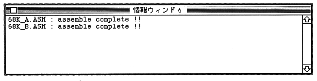
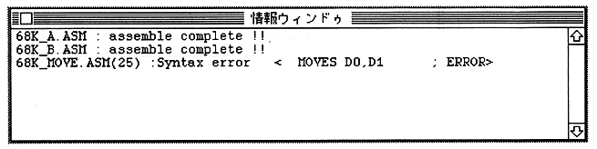

This command forcibly assembles all the sources registered in the project. Assemble all sources without checking source changes like the “assemble” command.
However, if an error occurs, subsequent sources are not assembled.
Display assembly execution results
When
assemble is executed, an information window is opened, and the execution results are reported.
・ When completed successfully --- assemble complete !! is displayed for each file.

・ When there is an error --- The error occurrence line and error type are displayed.

A
Link (shortcut: Command-L)
This command links the source objects registered in the project. A load module file (the file name is set using the "Option" command) is created.
When linking, the results are reported in the information window, just like when assembling.